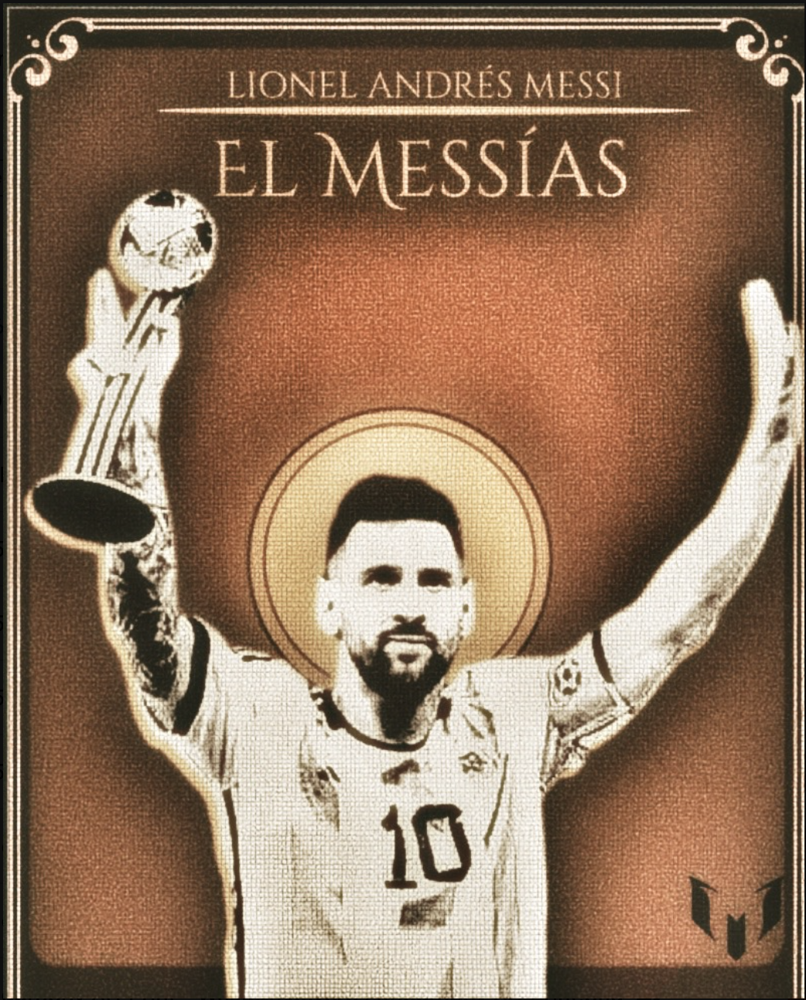
01 / Editorial tribute
Icons deserve
an afterglow.
A vintage championship poster built around the myth of Messi: warm grain, religious iconography and a little bit of victory.
Independent designer
based in India
Graphic designer · Brand identity · visual storyteller
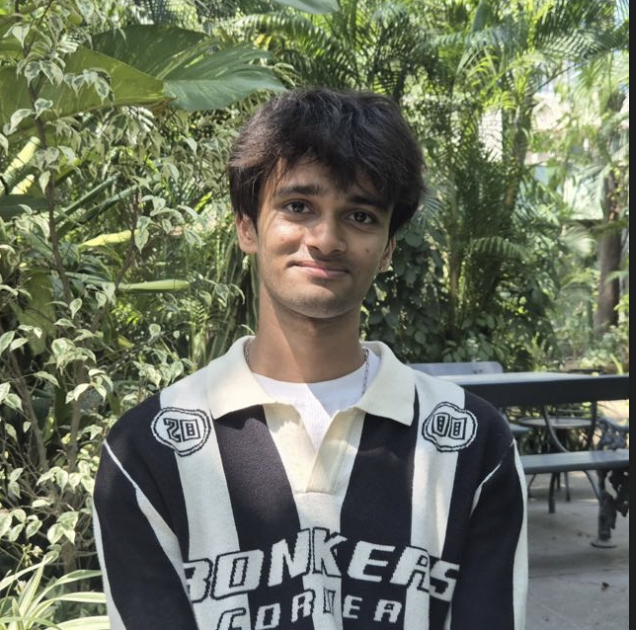
SelectedI make images that feel like
they have something to say.
( 01 )
I turn ideas, culture and feeling into bold visual systems. From a single poster to a full identity, every detail is made to hold attention—and stay with you.
( 02 )
Selected work

01 / Editorial tribute
A vintage championship poster built around the myth of Messi: warm grain, religious iconography and a little bit of victory.
02 / Cultural poster
Tamasha is loud, joyful and impossible to ignore. The lettering takes the lead, framed by ornament and theatre.
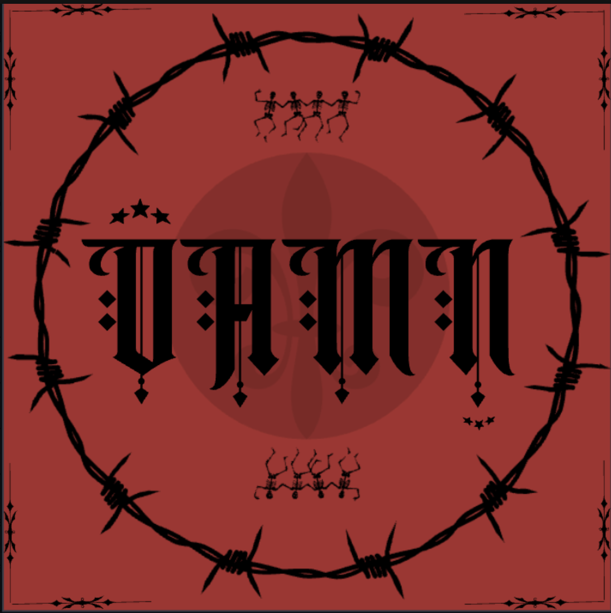
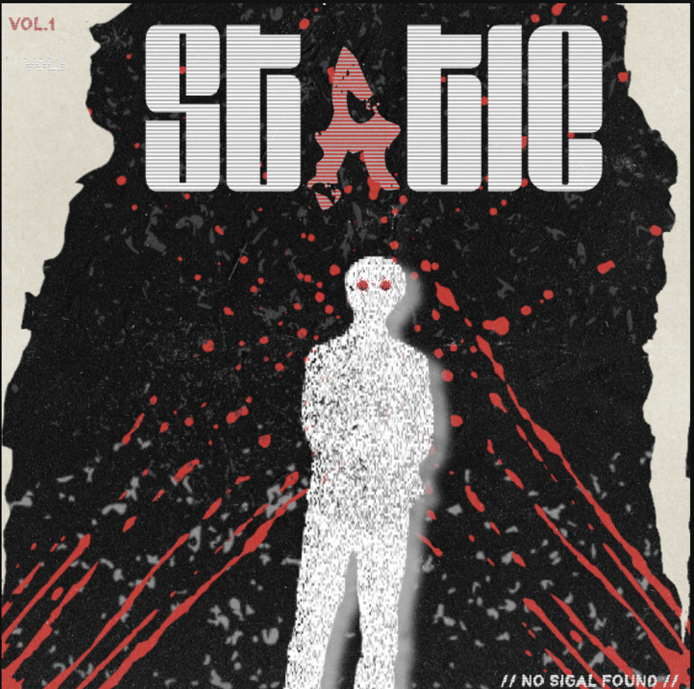
03 / Music artwork
A visual experiment in interruption—where noise becomes texture and a silhouette becomes a signal.
More to see
04 / Music & memory
Two intimate poster studies that use texture, silence and a little romance to make an artist’s world feel personal.
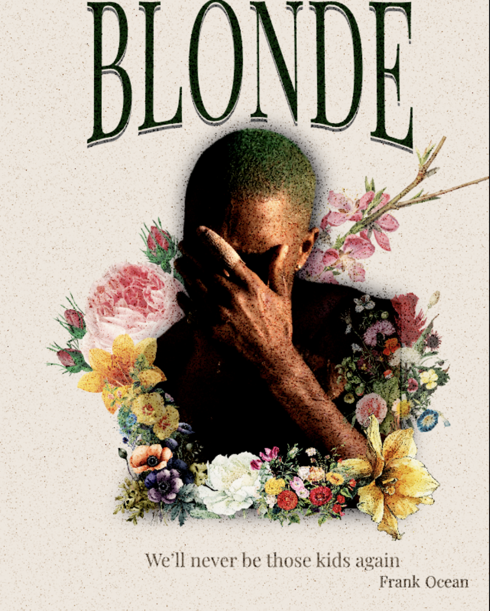
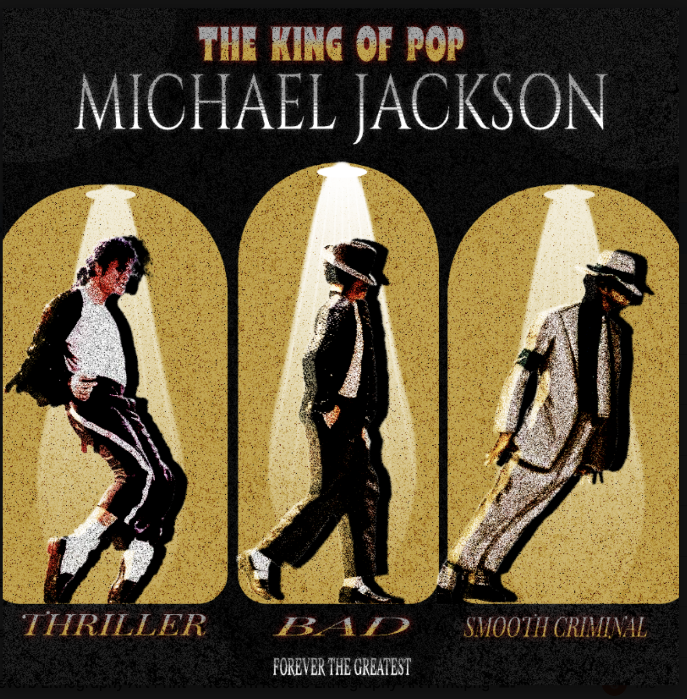
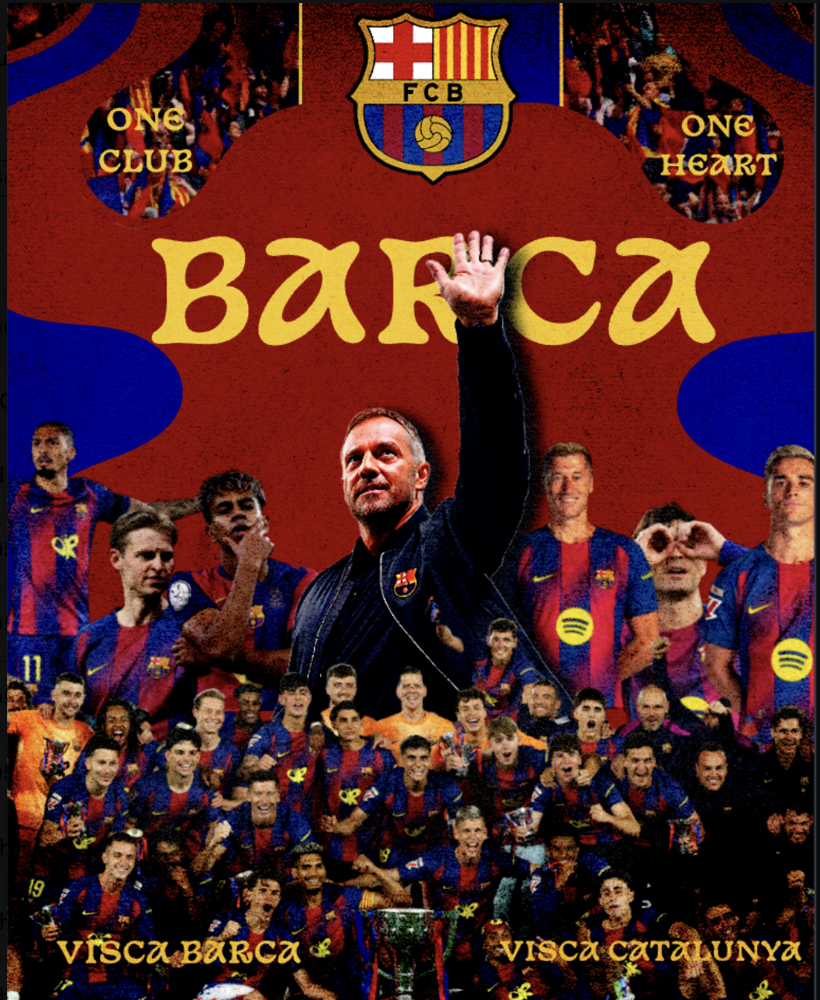
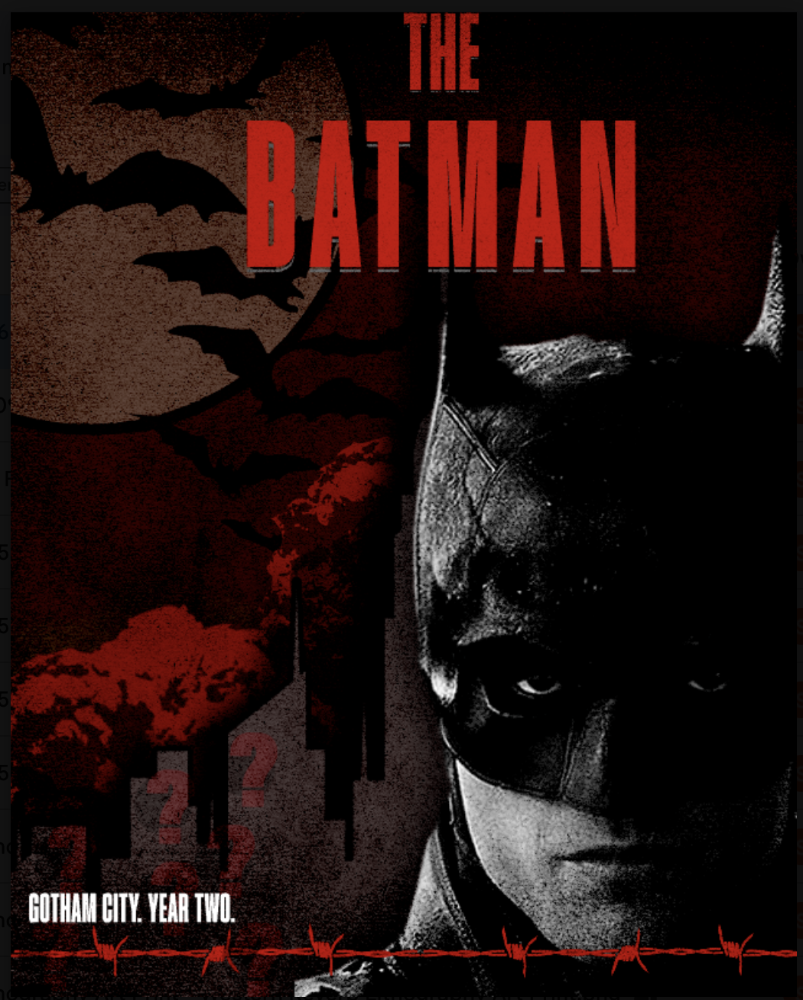
05 / Fandom & myth
Football and cinema are already emotional universes. These images heighten the tension until a moment becomes an icon.
06 / Indian visual culture
Spiritual symbolism and classic Indian cinema, made tactile with rich colour, print grain and expressive type.
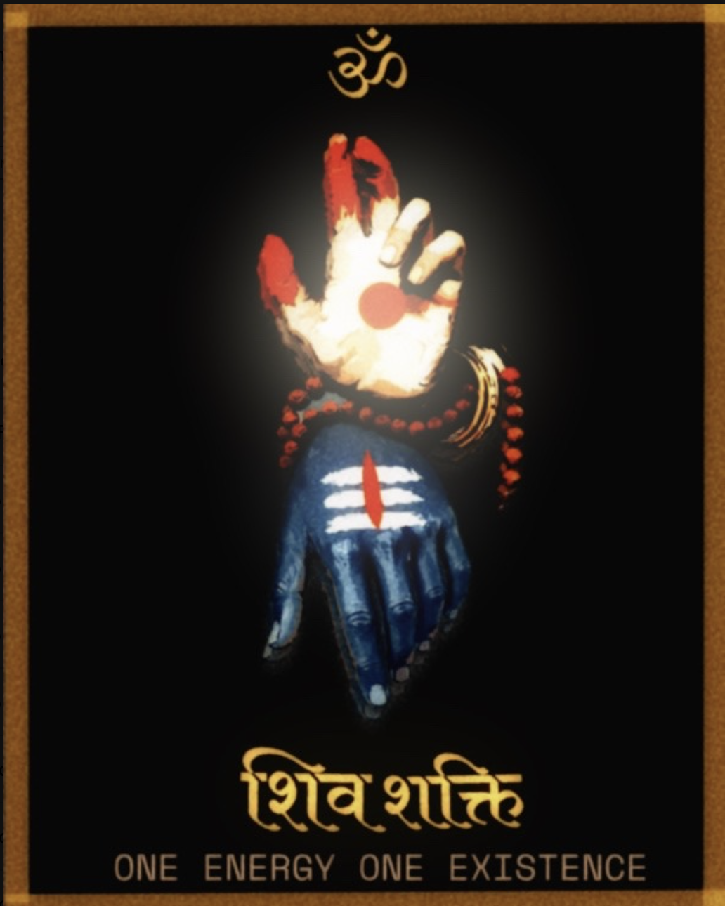
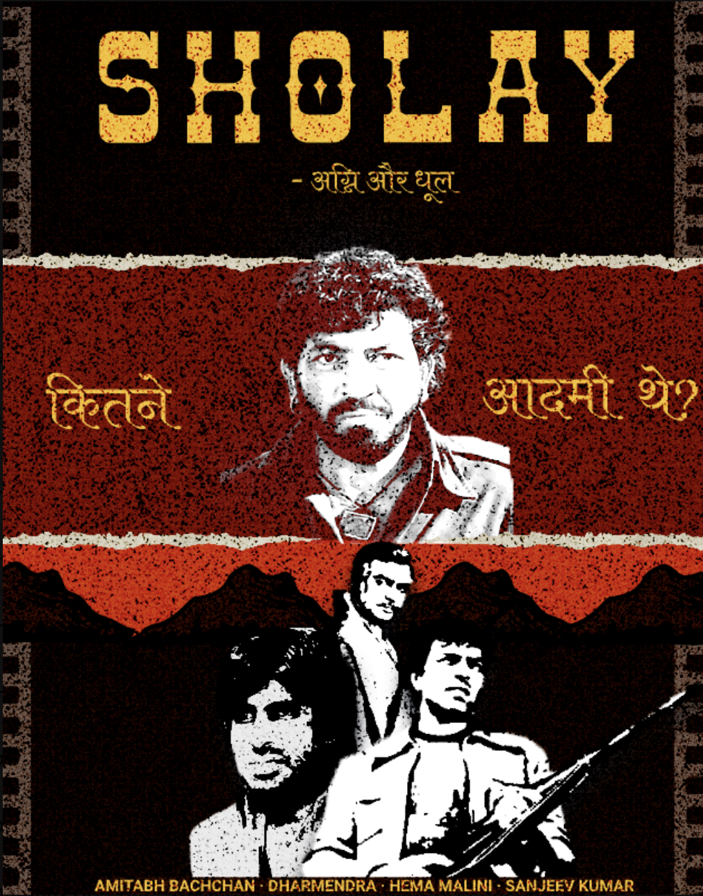
( 03 )
Featured study / festival communications
For Mahashivratri, I approached devotion as an atmosphere: black ink, old gold, cosmic blue and a calm that feels deeper than decoration.
Start a conversation ↗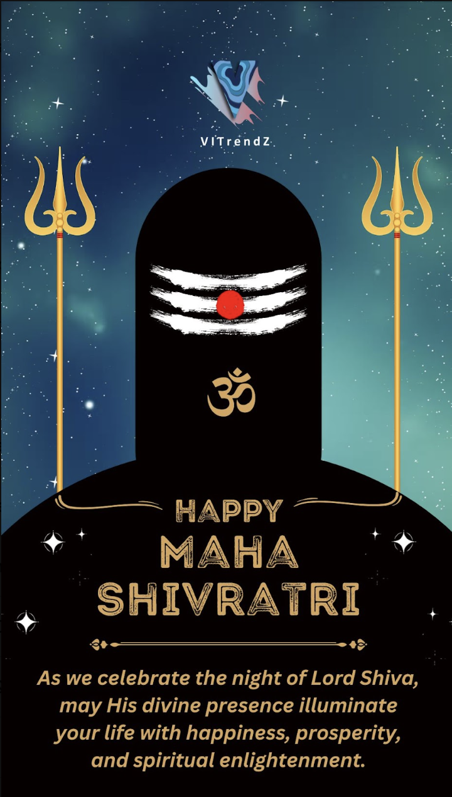
( 04 )
( 05 )
Fast ideas, crisp systems.
Type with a pulse.
Colour that carries feeling.
( 06 )
I’m a graphic designer drawn to the moments where a strong idea meets the right visual language. My work moves between brand identity, editorial graphics and expressive cultural pieces—always with typography, communication and the human reaction in mind.
I like visuals with a point of view. The kind you notice before you know why.
( 07 )
Have an idea worth seeing?